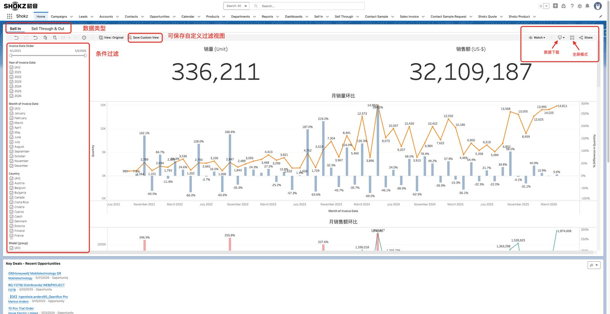
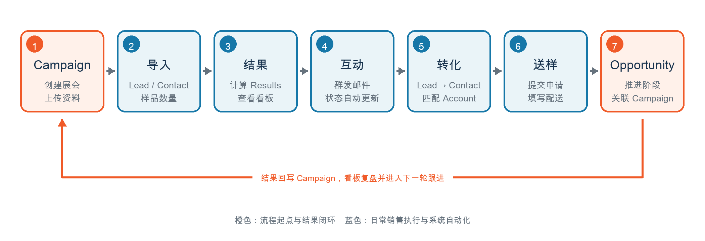

Start here
按今天的工作场景进入
把最常用的销售动作放在前面：先找场景，再打开对应步骤。
每天开始
检查待办、客户互动和下一步动作
适合新用户或每天开工时快速确认责任人、Activity 和 Task。
打开操作指南 展会资料 上传并展示 Campaign 展会图片把展位图、现场图和资料入口放回 Campaign 页面，方便团队复盘。
打开操作指南 名单导入 导入 Leads 和 Contacts 到 Campaign按模板清洗数据，检查字段映射和样品数量，减少导入后返工。
打开操作指南 送样申请 创建 Contact Sample Request从客户记录进入正式送样申请，补齐 SKU、数量和收件信息。
打开操作指南End-to-end flow
新用户维护与拓展
每一步都留下记录，展会结束后可以回到 Campaign 看板查结果。
Capability map
按工作场景找功能
每张功能卡都可以直接进入功能页，再从功能页跳到相关步骤指南。
0 个功能
Guide library
操作指南库
每篇指南都包含入口、步骤、截图、完成后检查和常见卡点。
0 篇指南
Reference
参考资料
对象、自动化和排查内容作为辅助资料保留在底部，操作时优先回到功能地图或指南库。
Data objects
数据对象参考
先看懂对象、报表和自定义工具的关系，再去操作会少走弯路。
Automation
自动化规则参考
这些规则会影响状态、看板和提醒。
Troubleshooting
常见问题排查
先查视图、状态和关联关系。仍然找不到原因，再联系管理员。